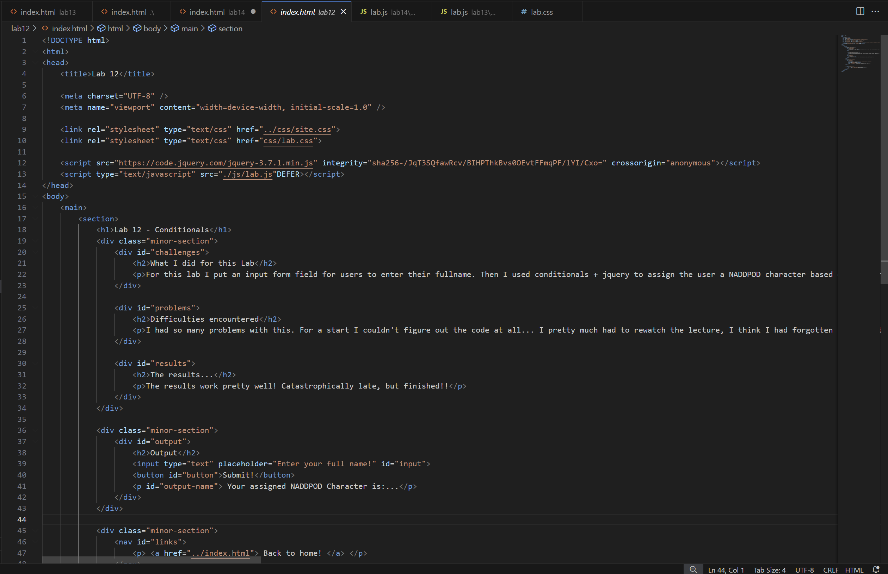
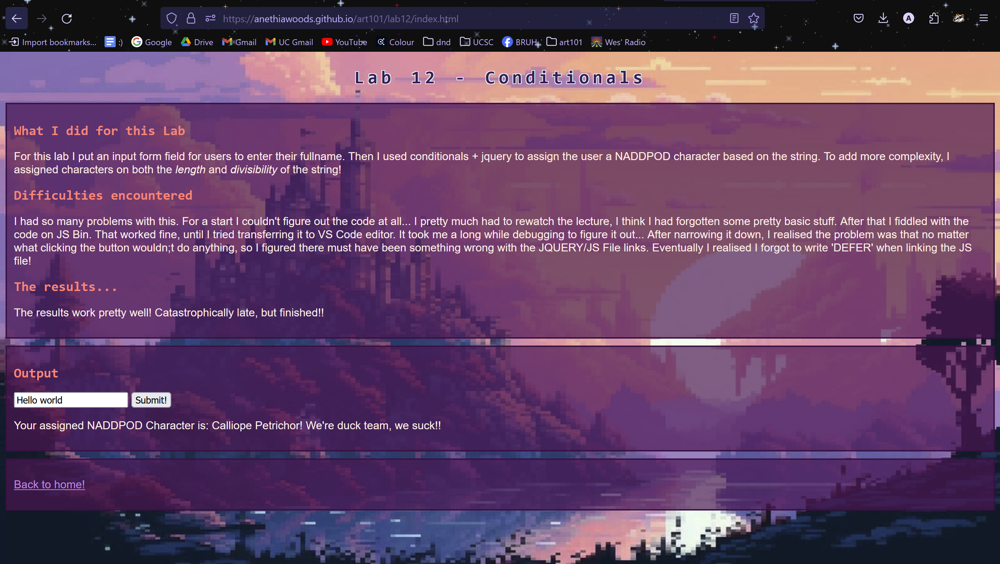

Lab 14 - Debugging Tools & Strategies
What I did for this Lab
This lab was pretty simple, just go back and debug some older stuff. I chose to do Lab 12, since I couldn't get my button to work.
Difficulties encountered
I actually had a surprisingly simple time with this? When I was first working on the lab before I got very frustrated and confused and couldn't figure anything out. But after like a week of just letting it be, and then coming back with a clearer head and a more systematic approach to debugging... I figured out the problem pretty quickly.
The results...
Lab 12 works now!
Debugging
For this assignment, I worked on lab 12. Previously I was having a lot of problems. No matter what I did I couldn't get the button to click right? I kept trying to re-edit the jquery & the functions and reviewing my javascript code but nothing was working.
To debug, I first did the 'commenting out' strategy. I commented out all the code except for a console.log attatched to the button. The button still didn't work. So I figured out there must be something wrong with the button. I reviewed the code, which looked fine, so I figured out it must be something to do with my html file. Maybe I had forgotten to link the jquery, so the listening even wasn't working? After some comparison with earlier labs, I realised the problem was that I hadn't added the 'DEFER' tag when I linked the JS File
After I fixed that, I got the button to print the console.log text! Then I could put back in all my commented out code! After that, the output was working fine and the problem was fixed... yay!
